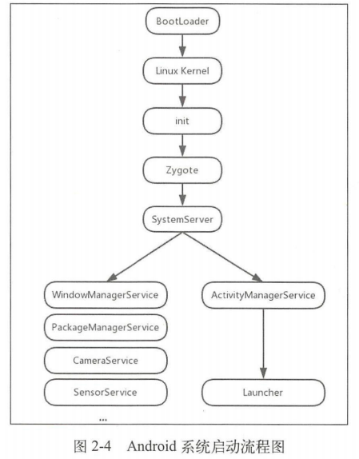
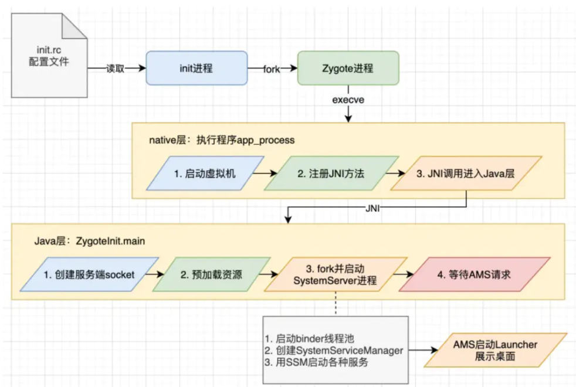

content以及APP启动流程简单解析
Context
Android应用模型是基于组件的应用设计模式，组件的运行要有一个完整的Android工程环境，在正确完备的环境下，Activity、Service等组件才能正确运行，而context就是相关组件的“上下文”，也即组件所处的完备环境，Context在加载资源、启动Activity、获取系统服务、创建View等操作都要参与 一个Activity就是一个Context，一个Service也是一个Context，用户和操作系统的每一次交互都可以被看做一个场景
Context
Context
是一个抽象类，它允许访问应用特定的资源和类，以及对应用级操作的上下文，例如启动活动、广播和接收意图等。它是
Android 系统的一个核心部分。
ContextImpl
ContextImpl 是 Context
类的具体实现。它是实际处理所有 Context API 调用的类。当你在 Android
应用程序中调用类似
getSharedPreferences()、startActivity()
等方法时，ContextImpl 实例在底层处理这些调用。
ContextWrapper
ContextWrapper 是 Context
的一个具体子类，它包装了一个现有的 Context
实例。它自己不实现任何功能，但它将所有的调用委托给它包装的
Context。
attachBaseContext(Context base): 这个方法用于将一个Context实例附加到ContextWrapper。这个方法通常在构造函数中调用，或者在你可以获取到Context的地方。
ContextThemeWrapper
ContextThemeWrapper 是 ContextWrapper
的一个子类，它增加了与主题相关的功能。它可以应用特定的主题到一个活动或应用的上下文中。
- Android 应用中的每个活动（
Activity）都需要一个 UI 主题来定义其视觉样式。活动使用ContextThemeWrapper来应用这些样式规则。 - 服务（
Service）和应用（Application）通常不需要处理 UI 和主题，所以它们直接继承自ContextWrapper。
Activity, Service, Application
这些都是 Android 应用程序中常见的组件，它们都扩展自
ContextWrapper：
- Activity:
每个活动都是一个用户界面屏幕。
Activity继承自ContextThemeWrapper，因此它可以使用主题。它有自己的上下文，通常是ContextImpl的一个实例。 - Service:
服务是一个没有用户界面，用于在后台执行长时间运行操作的组件。它直接继承自
ContextWrapper。 - Application: 这是 Android
应用的基类，包含全局应用状态。它同样直接继承自
ContextWrapper。
在它们的初始化过程中，无论是
Activity，Service 还是
Application，它们都会在某个时候关联一个
ContextImpl 实例。这意味着尽管它们是
ContextWrapper 的实例，但它们的方法调用最终都是由
ContextImpl 处理的。
这种设计允许 Activity，Service 和
Application 通过继承 ContextWrapper 获得
Context 的全部功能，同时它们可以通过内部的
ContextImpl
实例来实现这些功能，避免了代码重复。同时，这也提供了灵活性，因为
ContextWrapper 可以被用来创建具有特殊行为的
Context 对象，而不必更改实际处理请求的
ContextImpl。
而四大组件的另外两个组件roadcast Receiver，Content Provider并不是Context的子类，他们所持有的Context都是其他地方传过去的。
获取Context
View.getContext()
这个方法返回与当前 View 绑定的
Context，通常是宿主 Activity 的实例。因为每个
View 都是在某个 Activity
的上下文中创建的，所以这个方法返回的 Context
表示当前界面。使用这个 Context 时，要注意它的生命周期与当前
Activity 的生命周期是相同的。
Activity.getApplicationContext()
这个方法返回的是整个应用程序的 Context。这个
Context
的生命周期绑定到应用程序的生命周期，而不是某个特定的
Activity 或 Service。这意味着它不会随着
Activity 的销毁而销毁。这个 Context
适合于需要超越当前 Activity
生命周期的情况，比如在多个组件之间共享数据或者在需要长期存活的对象中使用。
ContextWrapper.getBaseContext()
这个方法获取的是 ContextWrapper 装饰之前的原始
Context
对象。在实际开发中用得较少，因为通常情况下我们并不需要去获取被装饰的
Context。
Activity.this
这是指向当前 Activity 实例的引用。在需要将当前
Activity 作为 Context
传递的场合非常有用，例如在创建对话框时。
getApplication()
vs getApplicationContext()
虽然 getApplication() 和
getApplicationContext()
在很多情况下返回的是同一个对象，但它们的用途略有区别：
getApplication()更明确地指出它返回的是Application类的实例。这个方法继承自Activity和Service，因此只能在这些组件中调用。getApplicationContext()可以在任何Context的子类中调用，包括Activity、Service、Application甚至是BroadcastReceiver。它提供了更通用的Context访问方式，但是它返回的仍然是全局Application的Context。
所以，本质上没有太大的差别，两者在大部分情况下是可以互换的。但从代码的语义性考虑，如果你在
Activity 或 Service
中需要引用应用程式本身，使用 getApplication()
会更清晰地表明你的意图。而 getApplicationContext()
则在你需要一个不依赖于活动生命周期的上下文时是一个更安全的选择，特别是在像
BroadcastReceiver 这样的组件中，因为它们不直接继承自
Context，所以不能使用 getApplication()。
App启动流程
系统启动流程
首先大概了解下安卓系统的启动流程
- 开机启动（Bootloader）
当设备加电后，首先运行的是 Bootloader。Bootloader 是一个小型的操作系统，它的主要任务是初始化硬件并加载操作系统的内核。
- Linux 内核加载
Bootloader 加载 Linux 内核，内核在启动时会初始化和配置 CPU、内存、驱动等硬件资源。
- 启动 init 进程
内核加载完成后，它会首先启动 init 进程。这是 Android
系统中所有进程的祖先进程。init 会根据设备的
init.rc 配置文件来启动一系列的服务和守护进程。
- 启动 Zygote 进程
init 进程会启动 Zygote，这是 Android
的应用程序启动器。Zygote 包含了预加载的 Android
类和资源，用于提高应用程序启动的效率。
- 启动 System Server
Zygote 进程会分叉（fork）出 System Server，它负责启动和管理系统级服务，如 Activity Manager、Window Manager、Package Manager 等。
- 系统服务的初始化
System Server 会启动和管理一系列的核心服务，这些服务提供了电话服务、访问文件系统、网络连接等功能。
- 启动 Launcher 应用
系统服务初始化完成后，Activity Manager 会启动 Launcher 应用（即主屏幕），用户就可以看到主屏幕并与设备进行交互了。

这里Zygote，SystemServer与ActivityManagerService是较为关键的概念
Zygote
zygote意为“受精卵“。Android是基于Linux系统的，而在Linux中，所有的进程都是由init进程直接或者是间接fork出来的，zygote进
程也不例外，但由于每一个APP都运行在一个单独的虚拟机，独立拥有一个单独的进程，若是每次启动一个App都需要去重新加载资
源，初始化环境将会极大降低效率，故Android系统开启新进程的方式，是通过fork第一个zygote进程实现的，而zygote包含了App
运行所需要的完备环境，这样就实现了资源公用并加快了启动速度
SystemServer
SystemServer也是一个进程，而且是由zygote进程fork出来的，负责启动和管理系统级服务，如 Activity Manager、Window Manager、Package Manager 等。
ActivityManagerService
- ActivityManagerService，简称AMS，服务端对象，负责系统中所有Activity的生命周期。
- ActivityManagerService进行初始化的时机很明确，就是在SystemServer进程开启的时候，就会初始化ActivityManagerService。

APP启动流程
- 点击 App 图标： 用户点击桌面上的 App 图标，这个操作被 Launcher 应用捕捉到，Launcher 应用是运行在自己的进程中。
- Launcher 通知 system_server： Launcher 通过 Binder
IPC 机制向
system_server进程发送startActivity请求，这是由活动管理器服务（Activity Manager Service, AMS）来处理的。 - system_server 请求 Zygote 创建进程：
system_server收到启动活动的请求后，向 Zygote 进程发送创建新应用进程的请求。Zygote 是 Android 系统的应用程序启动器，用于通过 fork() 操作快速创建新进程。这里使用的是 Socket 通信。 - Zygote fork 新进程： Zygote 进程 fork 出新的子进程，这个子进程就是 App 进程。
- App 进程准备运行： 新 fork 出的 App 进程开始运行
ActivityThread，这是 Android 应用的主线程。App 进程的信息（包括进程 ID 和 Binder 句柄）返回给 AMS。 - system_server 发送 scheduleLaunchActivity：
system_server在完成一系列准备工作后（如设置进程的初始状态和环境），再通过 Binder IPC 向 App 进程发送scheduleLaunchActivity请求。 - App 处理 scheduleLaunchActivity： App 进程的 Binder
线程（ApplicationThread）接收到请求后，通过 Handler 向主线程（也就是 UI
线程）发送
LAUNCH_ACTIVITY消息。 - 主线程接收消息并创建 Activity： 主线程接收到
LAUNCH_ACTIVITY消息后，开始通过反射机制创建目标Activity实例。在实例化Activity的过程中，Android 框架会调用attachBaseContext(Context base)方法，将一个正确配置的Context实例附加到新创建的Activity上。这是在Activity的构造函数之后、onCreate()方法之前发生的。（attachBaseContext(Context base)是ContextWrapper中实现的一个方法） - Activity 生命周期方法的调用： 在
attachBaseContext被调用并且Activity实例被正确配置后，Android 框架会按顺序调用Activity的生命周期方法：onCreate(),onStart(),onResume()。在执行完这些方法后，用户界面完成渲染，用户便能看到 App 的界面。 - App 正式启动：
Activity进入到前台，用户开始与 App 交互。此时，App 已经完成启动流程，进入到正常的运行状态。
参考
https://lrh1993.gitbooks.io/android_interview_guide/content/android/basis/context.html
https://www.51cto.com/article/677358.html
https://zhuanlan.zhihu.com/p/484862327
https://cloud.tencent.com/developer/article/1752875
《安卓进阶解密》